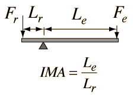

The Lever
|

|
The lever is one of the so-called "simple machines" from which many more complex machines are derived. With a lever, one can obtain a multiplication of force, but of course not a multiplication of energy. The multiplication of force can be seen to arise from the equilibrium of torques, where an input force Fe with a long lever arm Le can balance a larger resistance force Fr with a short lever arm Lr.
|
A rigid lever can approach an ideal machine since there is very little loss. From torque equilibrium we see that a resistance force Fr can be balanced by a smaller effort force Fe = (Lr/Le)Fr. This is often stated in terms of the ideal mechanical advantage Fr/Fe = Le/Lr shown in the illustration.
Since we know by conservation of energy that no machine can output more energy than was put into it, the ideal case is represented by a machine in which the output energy is equal to the input energy. For simple geometries in which the forces are in the direction of the motion, we can characterize the ideal machine in terms of the work done as follows:
Ideal Machine: Energy input = Energy output
Work input = Fedinput = Frdoutput = Work output
From this perspective it becomes evident that a simple machine may multiply force. That is, a small input force can accomplish a task requiring a large output force. But the constraint is that the small input force must be exerted through a larger distance so that the work input is equal to the work output. You are trading a small force acting through a large distance for a large force acting through a small distance. This is the nature of all the simple machines above as they are shown.
Of course it is also possible to trade a large input force through a small distance for a small output force acting through a large distance. This is also useful if what you want to achieve is a higher velocity. Many machines operate in this way.
|